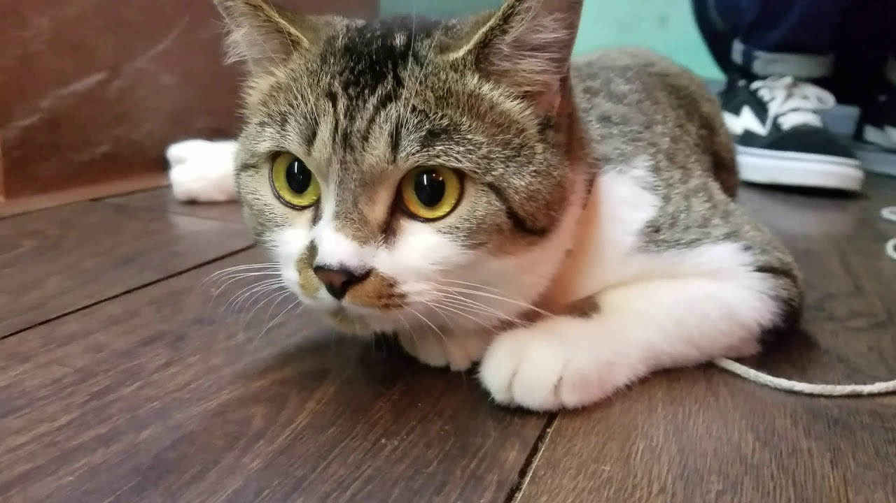
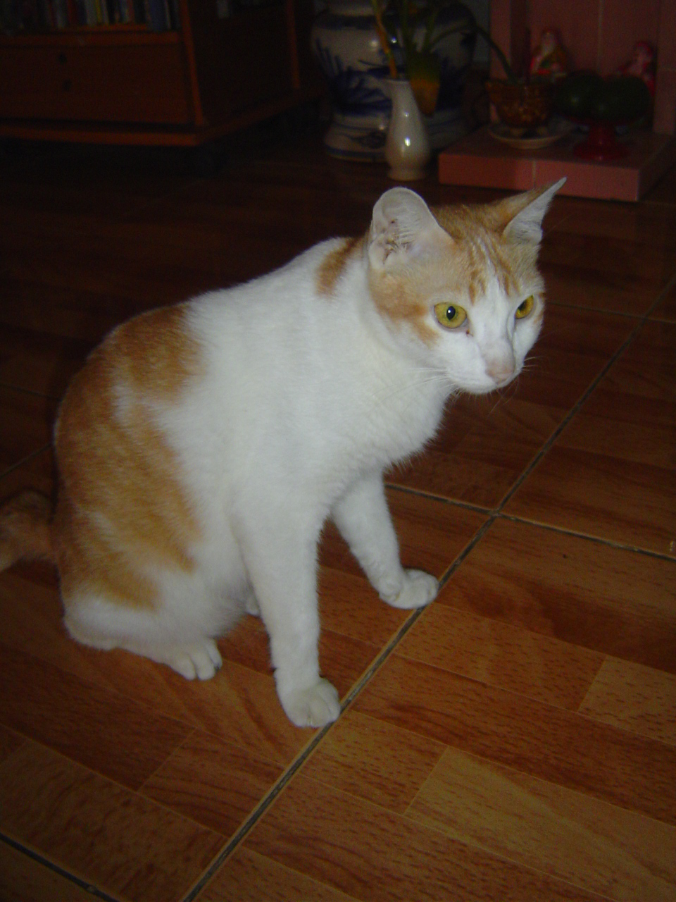
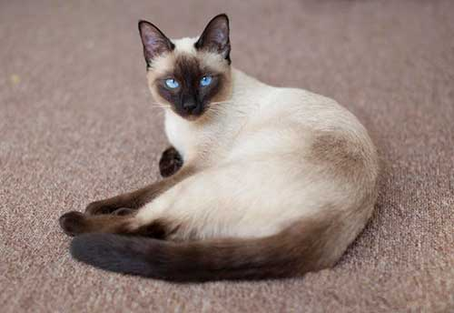
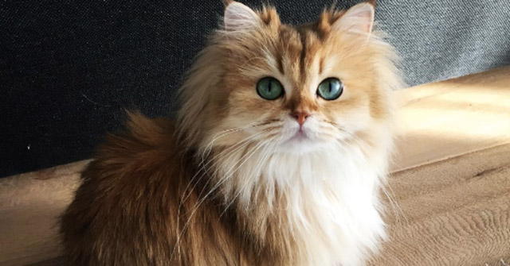
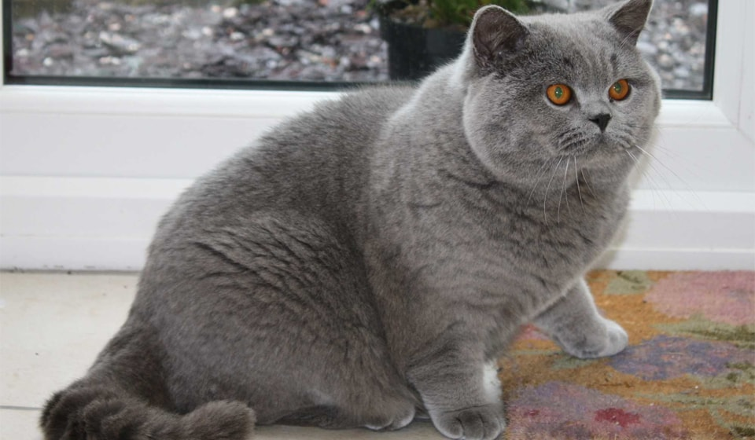
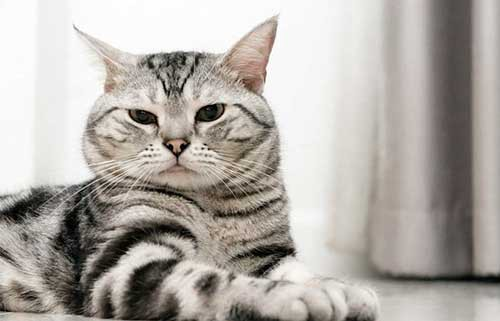

Cảm ơn bạn đã đến đây, hi vọng sau khi tham quan thế giới Mèo bạn sẽ có thêm nhiều niềm vui với cuộc sống cũng như là yêu thương loài mèo hơn
# Vì sao lại gọi là thế giới Mèo?
Đầu tiên, đây là một bài viết dành cho những người yêu mèo thực sự, tôi hi vọng bài viết này giúp ích được cho các bạn trong việc nuôi và chăm sóc vị "hoàng đế" của mình. Như cái tên gọi là Thế giới Mèo, bài viết này sẽ chỉ xoay quanh những chú mèo đáng yêu trên toàn thế giới.
Mèo là một sinh vật đáng yêu, thân thiện với con người và môi trường. Với những tính cách đặc biệt của mình, mèo là một thú cưng đáng được nuôi và nâng niu. ( Tìm hiểu lý do nên nuôi mèo tại đây )
# Một số giống mèo phổ biến
Dưới đây là hình ảnh một số giống mèo phổ biến trên toàn thế giới
Đầu tiên là mèo ta, mèo ta thì gồm có Mèo Mướp , Mèo Vàng và Mèo Xiêm. Giống mèo ta được nuôi chủ yếu là ở vùng nông thôn. Mèo ta có tính cách thân thiện, gần gũi với con người. Mèo ta dễ nuôi, hay leo trèo và ít phụ thuộc vào con người. ( Tìm hiểu thêm tại đây )



Ngoài mèo ta ra thì một số giống mèo ngoại quốc cũng rất được ưa chuộng, như là : mèo Anh lông dài, mèo Ba Tư hay là mèo ở một vài quốc gia khác...



Ngoài những chú mèo trong thực tế mà chúng ta thấy thì còn có những chú mèo huyền thoại, là tuổi thơ của nhiều người như là Doraemon, mèo Tom trong phim hoạt hình Tom & Jerry, mèo Oggy trong Oggy và những chú gián... Dưới đây là một số video liên quan:
Nếu như bạn có thắc mắc gì liên quan đến thế giới Mèo, đừng ngần ngại mà hãy liên lạc với tôi, chúc bạn vui vẻ :)